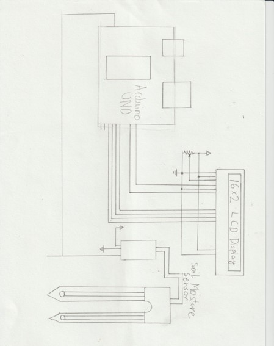
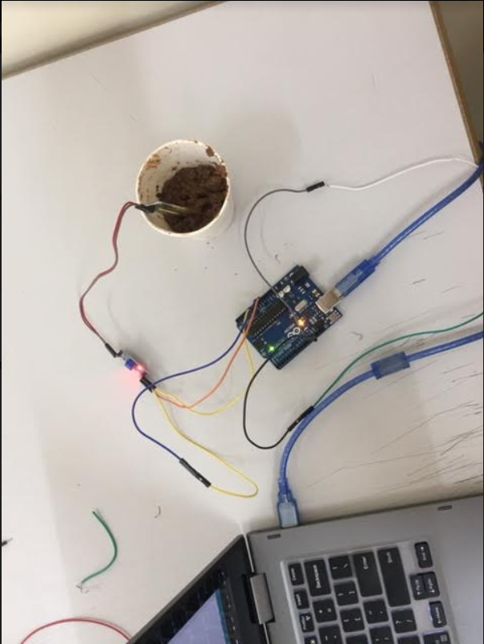

Soil Moisture Sensor
by Ronav Som Kiran
MYP 5 / Oakridge International School
My Project:
My project was to create a moisture sensor for plants, this will help measure the moisture level of the soil and hence be able to save the amount of water that you will need to keep the plant alive and grow healthy.
It has been found that a moisture level of 30% is enough to keep a plant alive and healthy, In my project, I will create a system that will check the moisture level of a potted plant and inform the user when the moisture level is below 30. It is a signal for the user to water the plant and hence keep the plant healthy.


Why is this helpful?
This product helps lower your water usage. Everyday many people waste water by watering their plants when it is not needed. By using this product you will be saving around 3% water of your total water consumption per day per plant, if you have many plants at home - these savings would be bigger.
If you have any questions regarding my project, please contact me at RonavKiran@live.com